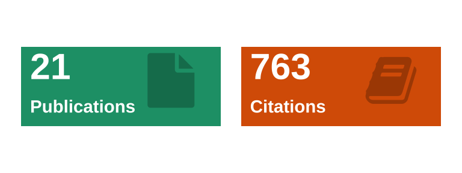
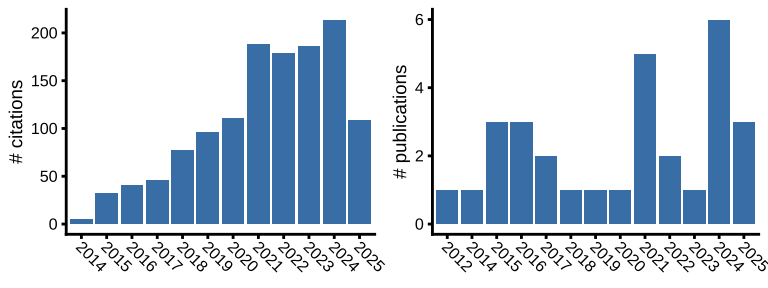
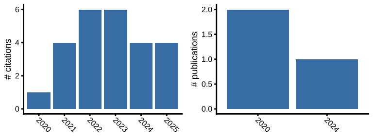

| Title | Authors | Journal | Year |
|---|---|---|---|
| Genetic and genomic architecture of species-specific cuticular hydrocarbon variation in parasitoid wasps | J Buellesbach, H Holze, L Schrader, J Liebig, T Schmitt, J Gadau, … | Proceedings of the Royal Society B | 2022 |
| Advances in deciphering the genetic basis of insect cuticular hydrocarbon biosynthesis and variation | H Holze, L Schrader, J Buellesbach | Heredity | 2021 |
| Relaxed selection underlies genome erosion in socially parasitic ant species | L Schrader, H Pan, M Bollazzi, M Schiøtt, FJ Larabee, X Bi, Y Deng, … | Nature communications | 2021 |
| Transposable elements and introgression introduce genetic variation in the invasive ant Cardiocondyla obscurior | M Errbii, J Keilwagen, KJ Hoff, R Steffen, J Altmüller, J Oettler, L Schrader | Molecular Ecology | 2021 |
| Genome assembly and annotation of the California harvester ant Pogonomyrmex californicus | J Bohn, R Halabian, L Schrader, V Shabardina, R Steffen, Y Suzuki, … | G | 2021 |
| Inhibition of HSP90 causes morphological variation in the invasive ant Cardiocondyla obscurior | L Schrader, M Winter, M Errbii, J Delabie, J Oettler, J Gadau | Journal of experimental zoology. Part B, Molecular and developmental evolution | 2021 |
| The Pogonomyrmex californicus social niche polymorphism is a polygenic trait involving a young supergene | M Errbii, UR Ernst, A Lajmi, E Privman, J Gadau, L Schrader | 2021 | |
| Genomic architecture and evolutionary dynamics of a social niche polymorphism in the California harvester ant, Pogonomyrmex californicus | M Errbii, UR Ernst, A Lajmi, J Gadau, L Schrader | bioRxiv | 2021 |
| Genetic redundancy resolves invasion paradox in Colorado potato beetle | F Yang, M Crossley, L Schrader, I Dubovskiy, R Zhang | 2021 | |
| Functional insights from the GC-poor genomes of two aphid parasitoids, Aphidius ervi and Lysiphlebus fabarum | AB Dennis, GI Ballesteros, S Robin, L Schrader, J Bast, J Berghöfer, … | BMC genomics | 2020 |
| The impact of transposable elements in adaptive evolution | L Schrader, J Schmitz | Molecular Ecology | 2019 |
| Stress and early experience underlie dominance status and division of labour in a clonal insect | A Bernadou, L Schrader, J Pable, E Hoffacker, K Meusemann, J Heinze | Proceedings of the Royal Society B | 2018 |
| The Global Ant Genomics Alliance (GAGA) | JJ Boomsma, SG Brady, RR Dunn, J Gadau, J Heinze, L Keller, … | Myrmecological news | 2017 |
| Accelerated evolution of developmentally biased genes in the tetraphenic ant Cardiocondyla obscurior | L Schrader, H Helanterä, J Oettler | Molecular Biology and Evolution | 2017 |
| Evolution of social insect polyphenism facilitated by the sex differentiation cascade | A Klein, E Schultner, H Lowak, L Schrader, J Heinze, L Holman, J Oettler | PLoS genetics | 2016 |
| A novel intracellular mutualistic bacterium in the invasive ant Cardiocondyla obscurior | A Klein, L Schrader, R Gil, A Manzano-Marín, L Flórez, D Wheeler, … | The ISME journal | 2016 |
| Phenotypic plasticity in Cardiocondyla obscurior | L Schrader | 2016 | |
| Sphingolipids, Transcription Factors, and Conserved Toolkit Genes: Developmental Plasticity in the Ant Cardiocondyla obscurior | L Schrader, DF Simola, J Heinze, J Oettler | Molecular Biology and Evolution | 2015 |
| Expression of the Foraging Gene Is Associated with Age Polyethism, Not Task Preference, in the Ant Cardiocondyla obscurior | J Oettler, AL Nachtigal, L Schrader | PLoS One | 2015 |
| Mating with an allopatric male triggers immune response and decreases longevity of ant queens | A Schrempf, K Von Wyschetzki, A Klein, L Schrader, J Oettler, J Heinze | Molecular Ecology | 2015 |
| Transposable element islands facilitate adaptation to novel environments in an invasive species | L Schrader, JW Kim, D Ence, A Zimin, A Klein, K Wyschetzki, … | Nature communications | 2014 |
| Evolution from the prokaryotic to the higher plant chloroplast signal recognition particle: the signal recognition particle RNA is conserved in plastids of a wide range of … | C Träger, MA Rosenblad, D Ziehe, C Garcia-Petit, L Schrader, K Kock, … | The Plant Cell | 2012 |

| Title | Authors | Journal | Year |
|---|---|---|---|
| Transposable elements and introgression introduce genetic variation in the invasive ant Cardiocondyla obscurior | M Errbii, J Keilwagen, KJ Hoff, R Steffen, J Altmüller, J Oettler, L Schrader | Molecular Ecology | 2021 |
| Inhibition of HSP90 causes morphological variation in the invasive ant Cardiocondyla obscurior | L Schrader, M Winter, M Errbii, J Delabie, J Oettler, J Gadau | Journal of Experimental Zoology Part B: Molecular and Developmental … | 2021 |
| The Pogonomyrmex californicus social niche polymorphism is a polygenic trait involving a young supergene | M Errbii, UR Ernst, A Lajmi, E Privman, J Gadau, L Schrader | 2021 | |
| Genomic architecture and evolutionary dynamics of a social niche polymorphism in the California harvester ant, Pogonomyrmex californicus | M Errbii, UR Ernst, A Lajmi, J Gadau, L Schrader | bioRxiv | 2021 |
| Functional insights from the GC-poor genomes of two aphid parasitoids, Aphidius ervi and Lysiphlebus fabarum | AB Dennis, GI Ballesteros, S Robin, L Schrader, J Bast, J Berghöfer, … | BMC genomics | 2020 |
Copyright © 2021 Lukas Schrader